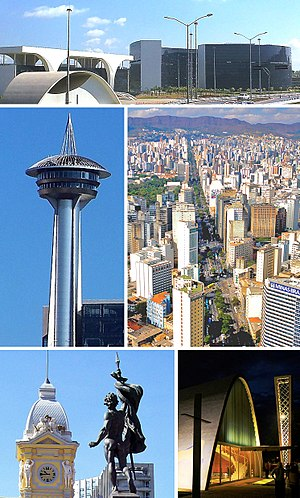

Consultoria Profissional & ServiçosEm Belo Horizonte - Minas Gerais Paulo C Ferreira (31)99260-3010 (31)98826-7452 |
||
| Consultoria Junto ao DNPM - MG
A empresa: Proficionais: Como Engenheiro de Mina e Geólogo, Consultores especializados para fazer prorocolos junto ao DNPM - MG Trabalhos como: Requerimentos diversos; Projetos de Engenharia de mina; Plano de Mina; Responsabilidade Técnica junto ao CREA; Regularização Ambiental. Requerimentos de Mineracao BH-MG Consultoria - Protocolos e Elaboracao de Documentos; Junto ao Departamento Nacional de Producao Mineral; Profissionais Como Geologo e engenheiro de mina; Despachante Para Protocolar Requerimentos Junto ao DNPM - Belo Horizonte - Minas Gera, Elaboracao de documentos e protocolo junto ao dnpm; Cadastro de pessoa fisica e juridica via sedex; Requerimentos de pesquisa mineral; Requerimentos de licenciamento; Relatorio anual de lavra - ral; Relatorio final de pesquisa mineral; Registro de extracao - licenciamento - pesquisa; Consulta via gps de disponibilidade de area; Consultas de processos junto ao dnpm; Acompanhamento de processos ao dnpm; Profissionais como geologo e engenheiro de minas; Acompanhamento de alvara de pesquisa ao dnpm. |
 |
Servicos de Bombeiro & Eletricista + Desentupidora em BH - MG
ELETRICISTA: Informatica Manutencao de Notebooks & Computadores em BH - MG Manutencao de Micro Computador e Notebook |
|
© 2024 Assistenciabh.com.br |
||